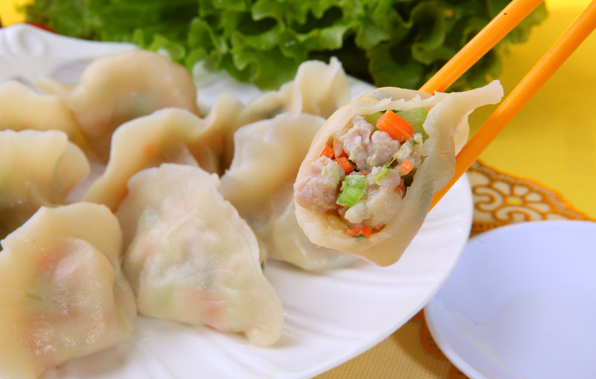

喜爱美食
饺子是一种历史悠久的民间美食。民间有“好吃不过饺子”的说法。每逢新春佳节，饺子更成为千家万户不可缺少的美味佳肴。春节吃饺子，在中国有着丰富的寓意。
现在饺子是春节的标识大餐，一桌饭再怎么丰盛，不吃饺子就不叫过年。家庭一起包饺子，团圆美满，和和美美，成为家庭幸福的象征和情意表达。饺子和春节联系在一起，起源于明朝。从那以后成为我们重要的民俗。
年三十新旧岁交替的时刻，中国人管它叫“交子”。因“饺子”与“交子”谐音，寓意“更岁交子”，中国人在这个时候吃饺子，既表示“更岁交子”的意思，又有“喜庆团圆”和“吉祥如意”的含义。
传统意义上的年俗，是大年三十晚上包饺子，一般在新旧交替时享用，俗称“吃五更饺子”。但现在没有这样严格的习俗了。过年的很多讲究，都因大众生活的随意而丢弃了。我们小时候，还打灯笼，小孩子守岁一夜不睡觉，现在印象还很深刻。那时什么也没有，就是干熬夜，也不知道怎么有那样的劲头，现在的小孩子熬一夜过年，就象在童话当中。
古代对时辰很有讲究，过年的风俗，每个时段都有严格的规定，现在很难再有了。就是西藏、青海等地藏药这种东西，在制作和饮服方面，古时有刻板的时辰规定，现在也都被现代人放弃了，不愿意这么麻烦。
以农业文明和宗法制度为基础的春节礼俗，现在一般停留在文献和谚语之中，很难成为现代人生活的规范了。新的年俗也没有完全建立起来，随着时光的远去，春节是个什么样子的，很不好说了。
在全家吃团圆饭的时候，有些地区的家庭还会把硬币包在饺子里面，意为吃到的人在新的一年里财源滚滚、好运不断。商人在煮饺子时，还要捅破一两个，意思是“挣了”，以求来年生意兴隆，财运亨通。
我为什么喜欢吃饺子呢？因为饺子里有家的味道，年的味道，中国的味道...